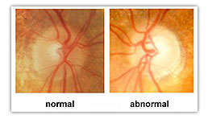

Resolve to Prevent Glaucoma in 2016
This year, make healthy eyes and vision your resolution. Find out if you or a loved one is at risk for glaucoma , and take steps for prevention.


Glaucoma is a leading cause of preventable vision loss and blindness in adults in the United States and Canada and the second leading cause of blindness in the World. Projections show that the number of people with the disease will increase by 58% by 2030. These facts however could change with proper awareness.
When detected in the early stages, glaucoma can often be controlled, preventing severe vision loss and blindness. However, symptoms of noticeable vision loss often only occur once the disease has progressed. This is why glaucoma is called “the sneak thief of sight”. Unfortunately, once vision is lost from the disease, it usually can’t be restored.
Risk Factors
Prevention is possible only with early detection and treatment. Since symptoms are often absent regular eye exams which include a glaucoma screening are essential, particularly for individuals at risk for the disease. While anyone can get glaucoma, the following traits put you at a higher risk:
- Age over 60
- Hispanic or Latino descent, Asian descent
- African Americans over the age of 40 (glaucoma is the leading cause of blindness in African Americans, 6-8 times more common than in Caucasians.)
- Family history of glaucoma
- Diabetics
- People with severe nearsightedness
- Certain medications (e.g. steroids)
- Significant eye injury (even if it occurred in childhood)
What is Glaucoma?
Glaucoma is actually a group of eye diseases that cause damage to the optic nerve due to an increase in pressure inside the eye or intraocular pressure (IOP). Treatments include medication or surgery that can regulate IOP and slow down the progression of the disease to prevent further vision loss if detected early. The type of treatment depends on the type and the cause of the glaucoma.
What are the Symptoms?
Most times glaucoma does not have symptoms. There is no pain unless there is a certain type of glaucoma called angle closure glaucoma. In this case, the channel of outflow gets crowded then blocked, causing foggy, blurred vision, halos around lights, headache and even nausea. This is a medical emergency and should be assessed immediately as the intraocular pressure can become extremely high and cause permanent damage within hours.
Most forms of glaucoma have an "open angle", which is not so urgent, but does need compliance with the treatment plan (which is sometimes difficult as some of the glaucoma drops have uncomfortable side effects). Once vision loss develops it typically begins with a loss of peripheral or side vision and then progresses inward.
What Can You Do To Prevent Glaucoma?
Because there are no symptoms, regular eye exams are vital to early detection. If you have any of the above risk factors or you are over 60, make a yearly comprehensive eye exam part of your routine. Make sure that your eye doctor knows your family history and any risk factors that are present.
A comprehensive eye ex am can determine your risk of developing glaucoma; if you have been diagnosed with glaucoma and have concerns about your treatment, it is best to speak openly with your doctor. Remember, a simple eye doctor’s appointment on a regular basis could save your vision for a lifetime.
Ready to see clearly?
Book a comprehensive eye exam with Carey Brooks, OD in Frisco, TX.